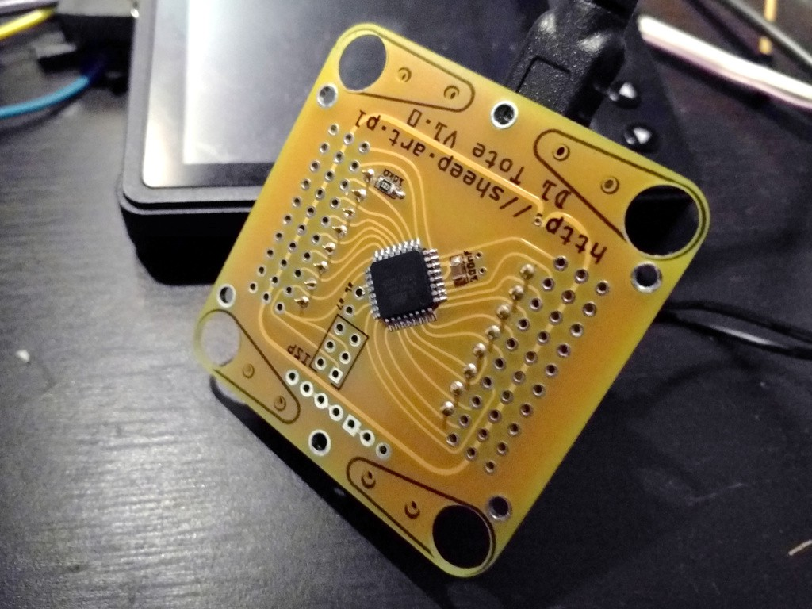

Smaller ATmega¶
Published on 2017-02-18 in D1 Mini Tote.
The ATmega8 chips arrived, and I decided to try and see if my servo controller code will run on it equally well as on the ATmega328p that I used previously. After soldering it to the PCB (I’m getting better at it) I edited the Makefile to change the target, ran it and… got errors. Looks like a couple of registers got renamed, so I took the datasheets, compared them and made the appropriate changes. This time it compiled, so I flashed it to the chip, and… it doesn’t work. I looked again, and realized that the fuses are completely different for this chip! To the avr fuse calculator. I changed the fuses in the makefile, flashed again and… it works!
I still need to properly debug and finish the Python code for walking – the last weeks were a bit too busy to setup the testing and focus on this properly, but I hope I will get it done soon.
By the way, I also received the PCB for the SpiderWing – the Feather version of this. I’m going to be developing them both in parallel for now.